Vue Planning¶
Autres vues de planification¶
Planification globale¶

Planification globale¶
La planification globale permet de créer et de visualiser tout type d’élément (projet, activité, jalons, risque, réunion, action…)
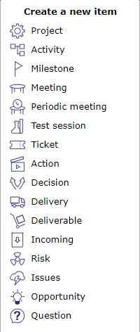
Créer un nouvel élément¶
Ajouter et afficher tout nouvel élément de planification sur le diagramme de Gantt
L’élément créé est ajouté dans le Gantt et la fenêtre de détail est ouverte.
La fenêtre de détail permet de compléter la saisie
Le calcul de la planification du projet et de la planification des activités peut être effectué dans le Gantt.
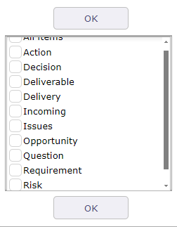
Afficher les éléments¶
Les Exigences peuvent être affichées, mais vous ne pourrez pas les créer depuis la vue planning
Portefeuille de projets¶
Cet écran n’affiche que les projets sur le diagramme. Les activités et les autres éléments qui composent la planification sont masqués.
L’affichage des colonnes correspondant aux champs du projet derrière le curseur vous permet d’afficher toutes les informations sur votre projet dans une seule vue : statut, priorité, dates, charges, durée, coûts, etc.
La possibilité d’afficher des champs personnalisés à l’aide du plugin de personnalisation est également disponible. Cliquez sur le bouton Colonnes pour choisir les champs à afficher.
Il affiche uniquement les jalons et les dépendances de projet.
Note
Cette section décrit le comportement spécifique de cet écran. Tous les autres comportements sont similaires à l’écran Diagramme de Gantt.
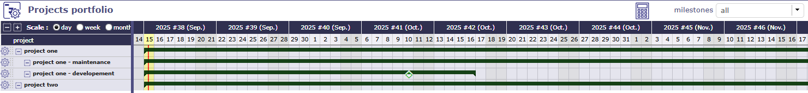
Gantt (Portefeuille de projets)¶
Afficher les jalons
Vous avez la possibilité d’afficher ou de masquer les jalons.
Il est possible de définir le type de jalon à afficher.
Tous les jalons sont disponibles : livrable, à venir, date clé, etc.
Les jalons sont affichés directement sur la barre de votre projet.
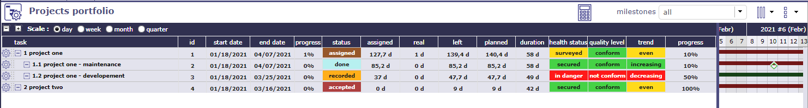
Colonnes du Portefeuille de projets¶
Comme dans la vue planning, vous affichez un menu dédié à la vue Portefeuille en faisant un clic droit sur la liste des projets.
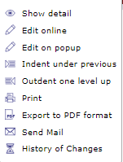
Menu contextuel¶
Planification des Ressources¶
Cet écran affiche le diagramme de Gantt d’un point de vue des Ressources.
Les tâches assignées sont regroupées sous le niveau de la Ressource.
En ce qui concerne la planification des Ressources, les réunions de groupe périodiques sont sous sa responsabilité.
Possibilité de visualiser les activités assignées sans charge.
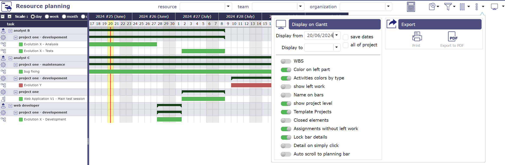
Gantt (Planification des Ressources)¶
Limiter l’affichage à la Ressource ou à l’équipe sélectionnée
Cliquez et sélectionnez une Ressource pour afficher uniquement ses données.
Cliquez et sélectionnez une équipe pour afficher uniquement les données des Ressources de cette équipe.
Cliquez et sélectionnez une organisation pour afficher uniquement les données des Ressources de cette organisation.
Diagrammes de Gantt pour les Ressources
Les barres utilisées dans le diagramme de Gantt pour les Ressources diffèrent légèrement des barres de planification standard.
La plupart des barres utilisées dans le diagramme de Gantt sont les mêmes que pour la planification standard.
Voir : Barres du diagramme de Gantt.
BARRE GRISE
Tout va bien¶
Condition : Les Ressources assignées sont disponibles et répondent à la charge de travail, les dates validées ou planifiées ne sont pas en conflit avec d’autres éléments.
La barre grise au centre représente graphiquement le pourcentage réel d’avancement par rapport à la durée totale de l’Activité.
Cela fait apparaître un écart de planification entre le travail commencé et le travail réévalué.
Comportement des dépendances
Les liens entre les activités ne sont affichés que dans le groupe de Ressources.
Les liens existant entre des tâches sur des Ressources différentes ne sont pas affichés.
Note
Cette section décrit le comportement spécifique de cet écran.
Tous les autres comportements sont similaires à l’écran Diagramme de Gantt.
Outils¶
Cliquez sur
 pour démarrer le Calcul de planification.
pour démarrer le Calcul de planification.Cliquez sur
 pour créer un nouvel élément.
pour créer un nouvel élément.Cliquez sur
 pour appliquer plusieurs filtres et gérer les Filtres avancés.
pour appliquer plusieurs filtres et gérer les Filtres avancés.Cliquez sur
 pour organiser les colonnes de la vue des données d’avancement.
pour organiser les colonnes de la vue des données d’avancement.Cliquez sur
 pour afficher le sous-menu.
pour afficher le sous-menu.Cliquez sur
 pour afficher cet écran en mode horizontal ou vertical.
pour afficher cet écran en mode horizontal ou vertical.
Afficher les dates¶
Cette fonctionnalité permet de définir les colonnes affichées dans la vue des données d’avancement.
Plus de détails : Afficher et organiser les colonnes.
Vue globale¶
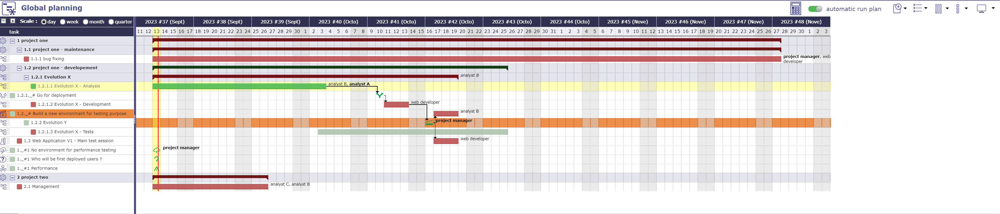
Écran vue globale¶
L’écran « Vue globale » liste tous les objets principaux créés au cours d’un projet. Cela vous permet de rechercher rapidement parmi tous les types d’éléments disponibles.
Vous pouvez également choisir d’afficher uniquement certains éléments via la liste à afficher
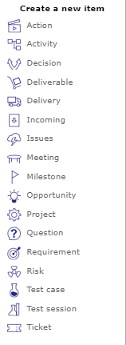
Afficher un ou plusieurs éléments¶
Ressource critique¶
L’écran des Ressources critiques vous permettra d’identifier les Ressources qui vont faire dériver le projet et de ne pas manquer certaines dates clés en raison d’un manque de capacité sur le projet.
Cela revient à calculer le planning complet et toutes vos Ressources en mode de Surbooking infini.
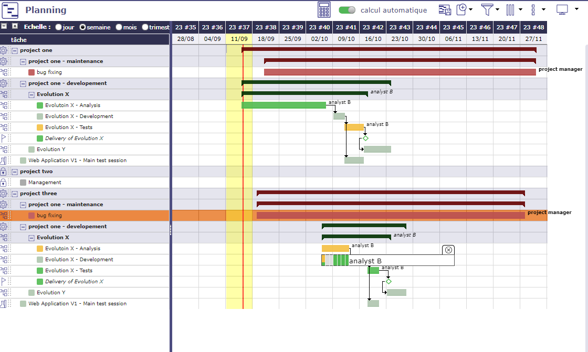
Planification en mode Surbooking infini¶
Liste des Ressources critiques¶
Le tableau des Ressources critiques vous indique pour chaque Ressource critique affichée :

Liste des Ressources critiques¶
Le nom de la Ressource
Sa charge disponible
Sa charge utilisée
Charge de Surbooking
Son rang (Index utilisé pour calculer la marge = différence entre disponible - utilisé)
Ce tableau des Ressources critiques est ventilé par projet.
Projets utilisant des Ressources critiques
Le tableau des projets utilisant des Ressources critiques vous permet de visualiser le nombre de jours de retard par projet et quelles Ressources causent le retard.
La valeur stratégique n’a aucun impact sur l’affichage des projets et la détermination des Ressources critiques. Cette valeur (numérique) est libre et laissée à votre discrétion.
Il peut s’agir d’une valeur comprise entre 1 et 100, ou d’un nombre d’activités commerciales ; dans tous les cas, cela vous permettra d’identifier si les projets consommant des Ressources critiques sont stratégiquement pertinents et donc méritent d’être mis en œuvre.
Planification des Ressources critiques¶
Le tableau Liste des Ressources critiques par période est une représentation de la planification actuelle, non de la planification idéale.
L’affichage sera effectué par période définie sur l’échelle (semaine, mois, trimestre) ou en affichant la « charge de Surbooking » nécessaire pour optimiser la planification.

Écran des Ressources critiques¶
Mise en forme des résultats et indicateurs
Indicator is a percentage = (Margin - Overbooked) / Available (* 100)
- Définir le seuil
Default Red = « < 20% »
Orange par défaut = « < 5% »
- Planification en retard
En rouge, la Ressource n’a pas une capacité suffisante pour terminer la tâche dans les délais
Date de fin planifiée > Date de fin validée - Surbooking sur l’Activité
- Capacité manquante
En jaune, la Ressource n’a pas une capacité suffisante pour terminer la tâche dans les délais, mais n’est pas la cause du retard de la tâche.
Date de fin planifiée > Date de fin validée - pas de Surbooking
- Planification optimale
En vert, la Ressource a une capacité suffisante pour terminer la tâche dans les délais
Date de fin planifiée < Date de fin validée - pas de Surbooking sur l’Activité
Scénario de Ressources critiques¶
Sans affecter votre planning de base, vous pouvez simuler le démarrage d’un ou plusieurs projet(s) à des dates ultérieures en mois.
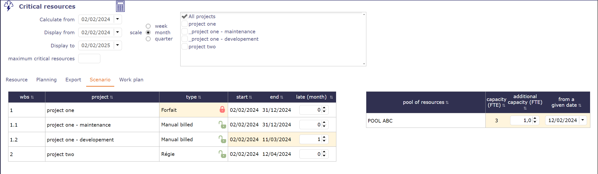
Scénarios possibles pour une simulation sur des projets contenant des Ressources critiques¶
Vous pouvez également ajouter de la capacité supplémentaire à vos pools pour vérifier si l’ajout possible de Ressources peut améliorer la planification de vos projets.
Vous pouvez appliquer une date particulière pour que la nouvelle capacité soit ajoutée, ce qui déterminera quand la nouvelle capacité peut être intégrée.
Plan de charge des Ressources critiques¶
Vous pouvez obtenir directement sur l’écran des Ressources critiques le Rapport sur la planification de la charge d’une Ressource sélectionnée pour la période indiquée.

Rapport de planification de charge pour une Ressource¶
Planning & Plan de charge dynamique¶
En plus de la vue planning et de la vue du plan de charge dynamique, ProjeQtOr propose une vue qui combine les deux écrans.
Cet écran vous permet de visualiser rapidement comment la quantité de charge affecte les dates de vos projets.

Écran Planning et plan de charge dynamique¶
Note
Le plan de charge dynamique combiné au planning a été créé pour la lecture.
Le tableau n’offre donc pas les options d’affichage et les restrictions proposées sur l’écran dédié.
ProjeQtOr propose une vue dynamique du plan de charge de vos Ressources.
Vous pouvez visualiser la charge passée et prévisionnelle ainsi que la capacité future d’une Ressource ou de toutes les Ressources et pools.
L’affichage peut être limité à l’aide de filtres.

Écran Plan de charge dynamique¶
Le graphique représentera la charge de travail passée et future sous forme de barres, similaires au détail des barres Gantt, et la capacité de la Ressource ou du groupe sous forme de ligne.
Les données sont automatiquement limitées aux données du ou des projet(s) sélectionné(s) dans le sélecteur de projets.
Cliquez sur  pour ouvrir la ligne des Ressources.
pour ouvrir la ligne des Ressources.
Toutes les Ressources des projets sélectionnés sont affichées avec le détail du travail pour chacune.
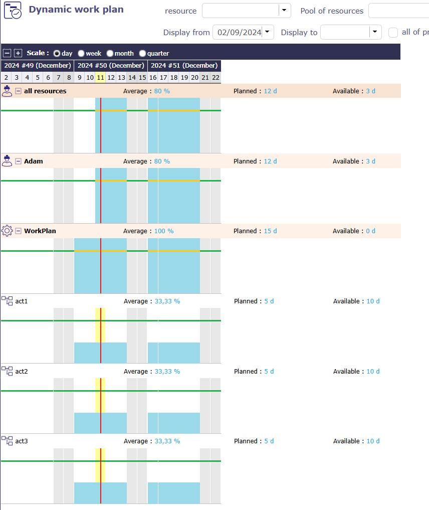
Niveau du plan de charge¶
Cliquez à nouveau sur le d’une Ressource pour afficher toutes les Activités sur lesquelles la Ressource a du travail.
Survolez une Activité pour voir ses détails
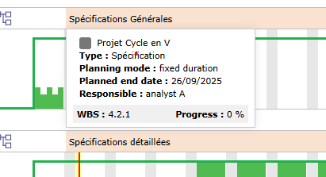
Détails de l’Activité sur le plan de charge dynamique¶
Astuce
Une option dans les options d’affichage de l’écran vous permet d’afficher ou non le niveau projet.
De nombreuses options vous permettent de personnaliser l’affichage du plan de charge dynamique.
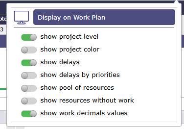
Options du plan de charge dynamique¶
Afficher les niveaux de projet
Permet d’avoir toutes les données des éléments constituant le projet sur une seule ligne pour une Ressource.
Afficher les couleurs du projet
Permet de visualiser les barres de charge dans la couleur assignée au projet dans la section description
Afficher les retards
Permet de visualiser le plan de charge dans les mêmes couleurs que les barres du diagramme de Gantt.
Afficher les retards par priorité
Cette option, disponible uniquement lorsque « afficher les retards » est activé, n’utilisera pas les couleurs de la vue Gantt mais les couleurs de priorité à gérer.
Afficher le Pool de ressources
Les pools sont un regroupement de Ressources. Leur planification est répartie sur tout ou partie du groupe.
Afficher les Ressources sans travail
Lorsqu’une Ressource n’a plus de travail à effectuer, et donc plus de travail planifié, sa ligne disparaît, tout comme les éléments clos.
Vous pouvez donc afficher toutes les Ressources d’un projet, même si aucun travail ne leur a été assigné.
Afficher les valeurs décimales du travail
Permet d’arrondir ou non les valeurs calculées par le logiciel.
Code couleur¶
Différentes légendes peuvent être appliquées au plan de charge dynamique et donc changer les couleurs.
Mode normal¶
Le mode normal affiche les projets en tons bleus.

Plan de charge dynamique¶
 Travail restant. Travail assigné.
Travail restant. Travail assigné.
 Travail réel - imputé aux Imputations.
Travail réel - imputé aux Imputations.
{kind=link}
Mode couleur projet¶
Permet d’afficher les barres dans la couleur du projet. Si le projet n’a pas de couleur, les barres sont affichées en gris.

Plan de charge dynamique avec couleur de projet¶
Mode couleur des retards¶
Le mode délai décoche automatiquement le mode couleur de projet.
Cela vous permet de revenir aux mêmes couleurs que sur le diagramme de Gantt.
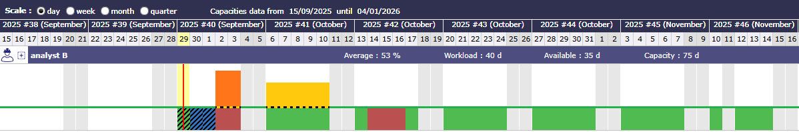
Plan de charge dynamique avec couleur de projet¶
 Travail réel
Travail réel
 Travail réel en retard
Travail réel en retard
 Travail restant. Travail assigné. Ni retard, ni surbooking.
Travail restant. Travail assigné. Ni retard, ni surbooking.
{kind=link}
 En retard, mais non Surbooké.
En retard, mais non Surbooké.
 Surbooké, mais pas en retard.
Surbooké, mais pas en retard.
Mode couleur des retards avec priorités¶
Le mode délai avec visualisation des priorités changera les couleurs des retards.
Cela vous permet d’identifier rapidement l’ordre dans lequel les tâches doivent être accomplies en mettant en évidence celles qui ont le plus de retard.
Cela nous permettra de prioriser les activités rouges, puis les activités oranges, puis les activités jaunes, en ne laissant que les activités vertes, afin que tout se passe bien.
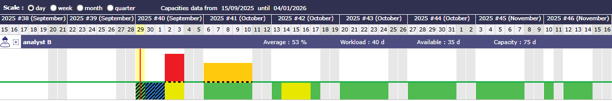
Plan de charge dynamique avec couleur de projet¶
{kind=link}
{kind=link}
Capacité¶
La ligne correspond à la capacité de la Ressource.
Elle change de couleur uniquement lorsque le plan de charge dynamique est affiché en mode normal pour indiquer la surcharge.
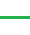
{kind=link}
Valeur de capacité en surcharge des Ressources
{kind=link}

Plan de charge avec Surbooking¶
Lorsque le planning est affiché dans d’autres modes, la ligne est pointillée en noir et jaune pour une meilleure lisibilité.
 Valeur de capacité des Ressources
Valeur de capacité des Ressources
Voir aussi
Filtres¶
Sur chaque ligne, nous affichons :
Le nom de la Ressource ou du groupe de Ressources précédé de son icône de classe.
Moyenne d’utilisation de la capacité = Somme (charge de travail) / Somme (capacité) [exprimée en %]
Travail planifié = Somme (charge de travail) [exprimé en jours ou heures]
Disponible = Somme (capacité) - Somme (charge de travail) [exprimé en jours ou heures]
Les informations de travail sont affichées en jours ou en heures selon le paramètre d’affichage de la charge globale pour la période sélectionnée.
Si un Pool est sélectionné
Les données du graphique représentent la somme des données du Pool et des Ressources du Pool
Si une Équipe ou une Organisation est sélectionnée
Les données du graphique représentent la somme des données des Ressources et des Pools de l’équipe ou de l’organisation.
Si aucun paramètre n’est sélectionné
Les données du graphique représentent la somme des données de toutes les Ressources dont l’utilisateur actuel est responsable (telles que listées dans la liste des Ressources sur l’écran des Affectations)
Périodes et échelles d’affichage¶
L’échelle, qui détermine l’affichage des abscisses, est sélectionnée au niveau de l’en-tête.
Vous pouvez choisir les mêmes échelles que pour la vue planning : jour, semaine, mois, trimestre pour l’affichage des dates.
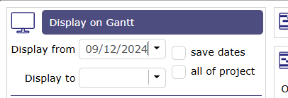
Afficher les dates dans la vue Planning¶
Le choix de l’échelle déterminera :
La largeur d’affichage d’un jour, exactement comme dans la vue planning
La granularité de l’affichage des données, sur une base journalière ou hebdomadaire, comme c’est le cas pour le détail d’une barre Gantt dans la vue planning
Le choix de la période à afficher sera identique à la sélection disponible sur le Gantt avec la date de début (positionnée par défaut sur la date actuelle) et la date de fin (vide par défaut).
L’option « projet entier », qui détermine automatiquement la date de début et de fin en fonction des données à afficher (exactement comme pour la vue Planning).
Le choix d’un filtre de durée, semaine, mois, trimestre, semestre, année, déterminera automatiquement la date de fin dans le champ « afficher jusqu’au ».
Les deux échelles sont indépendantes l’une de l’autre et peuvent être combinées.

Plan de charge - Échelle de durée¶
Important
Les dates d’affichage de la vue planning et du plan de charge dynamique sont liées.
Lorsque vous sélectionnez des dates de début et de fin d’affichage, elles seront identiques d’une vue à l’autre.
Si vous modifiez les dates d’affichage sur l’écran du plan de charge dynamique, lorsque vous revenez à la vue planning, ces dates d’affichage seront appliquées automatiquement
Options¶
Plusieurs options vous donnent la possibilité d’afficher le graphique de différentes manières.
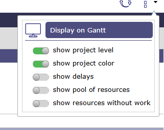
Options du plan de charge dynamique¶
Niveau projet
Vous pouvez choisir d’afficher ou non la charge de travail de la Ressource pour l’ensemble du projet.
Cette option permet d’afficher une ligne supplémentaire et indique la charge de travail totale de la Ressource pour les différentes Activités de ce projet, qui sera détaillée au niveau suivant.
Couleur par projet
Ainsi, au lieu d’avoir uniquement du bleu foncé pour le réel et du bleu clair pour le planifié, la charge de chaque projet sera affichée dans la couleur du projet, si elle est renseignée, ou dans la couleur du type de projet sinon.
La charge réelle sera distinguée par un hachurage de la couleur.
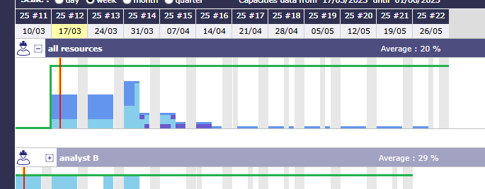
Plan de charge affichant les couleurs de projet¶
Afficher les retards
Afficher les retards vous permet d’afficher les barres de charge de travail dans le graphique avec les couleurs des barres Gantt, indiquant si le travail est « en retard » ou non.

Afficher les retards¶
Vert : Tout va bien
Rouge : Le travail dépasse la date prévue
Orange : La planification est en Surbooking
Tableau de bord des projets¶
Cet écran vous permet de suivre les informations clés de vos projets.
Le tableau de bord affiche les projets pour lesquels vous disposez de droits de visibilité.
Il vous permet de trier selon divers critères et de visualiser les informations du projet de manière graphique.
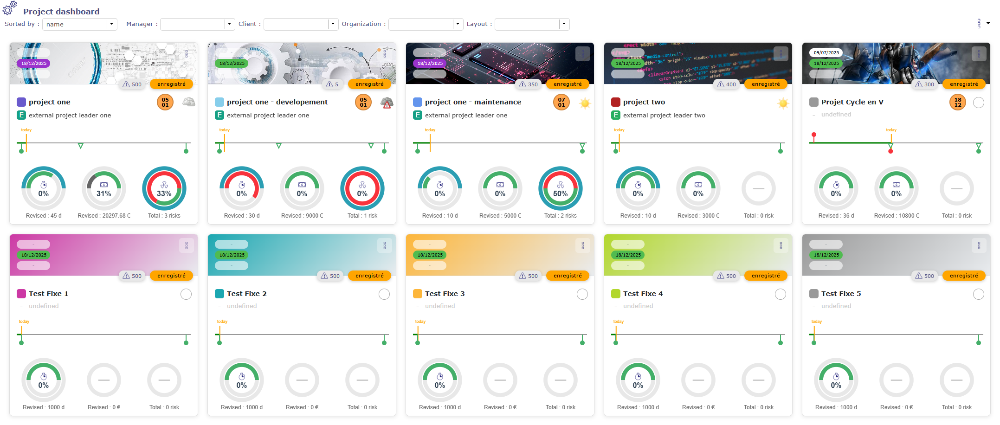
Écran du tableau de bord des projets¶
Filtres et options
Plusieurs options de tri et de filtrage vous permettent d’afficher les projets comme vous le souhaitez, avec les informations de votre choix.
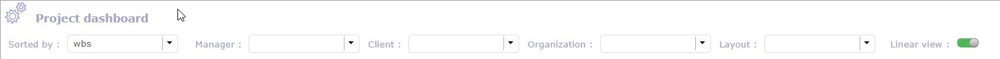
Tri et filtrage sur les cartes de projet¶
The affichage linéaire permet d’afficher les projets en lignes.
Les cartes¶
Chaque projet est représenté sous forme de carte et affiche les informations que vous avez sélectionnées.
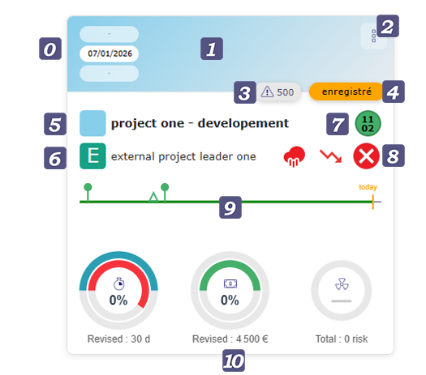
Carte de projet¶
 Voir les dates de début ou de fin validées - planifiées - réelles
Voir les dates de début ou de fin validées - planifiées - réelles
 Image. Il est possible d’ajouter une image à chaque carte de projet.
Image. Il est possible d’ajouter une image à chaque carte de projet.
Si aucune image n’est sélectionnée, l’arrière-plan est rempli avec la couleur appliquée au projet.
Cliquez sur l’image (hors icône +) pour accéder aux détails du projet en mode graphique.
 Outils
Outils
Aller au projet vous permet d’accéder à l’écran des projets dédié.
Rechercher dans le planning vous permet d’accéder à la vue planning et d’isoler le projet à l’aide du sélecteur.
Aller au plan de charge vous permet d’accéder directement au plan de charge dynamique du projet sélectionné.
Aller aux Risques vous permet d’accéder à la page dédiée aux Risques.
 Priorité du projet.
Priorité du projet.
 Statut du projet.
Statut du projet.
 Nom du projet. Cliquez sur le nom pour accéder à l’écran du projet.
Nom du projet. Cliquez sur le nom pour accéder à l’écran du projet.
 Chef de projet
Chef de projet
 Prochain jalon dans le projet
Prochain jalon dans le projet
 Météo du projet
Météo du projet
 Chronologie de la durée du projet avec option d’affichage des jalons par type. Les jalons validés sont affichés sous la ligne et les jalons planifiés sont affichés au-dessus de la ligne.
Chronologie de la durée du projet avec option d’affichage des jalons par type. Les jalons validés sont affichés sous la ligne et les jalons planifiés sont affichés au-dessus de la ligne.
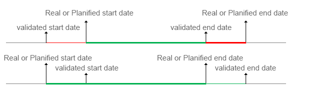
Les barres changent également de couleur en fonction du type de date (validée, réelle, planifiée) et/ou selon qu’elles sont en retard ou non.
 Avancement de la charge de travail - Budget et les Risques
Avancement de la charge de travail - Budget et les Risques
Le premier cercle bleu représente les informations que vous avez validées.
Le cercle intérieur indique l’avancement.
En vert lorsque tout se passe bien.
En gris lorsqu’il y a des informations « réelles »
En rouge lorsque les informations validées ont été dépassées.
À l’intérieur, l’affichage de cet avancement en pourcentage est indiqué.
Le survol des cercles vous fournit des informations supplémentaires.
Options¶
Vous sélectionner les éléments d’informations que vous voulez afficher sur le graphe.

Options d’affichage du tableau de bord et des cartes¶
La fonction « Enregistrer » vous permet de sauvegarder votre présentation et vos filtres d’affichage.
Cela vous permet de retrouver votre mise en page préférée à tout moment.
Affichage linéaire¶
Le mode linéaire vous permet d’afficher les projets en ligne
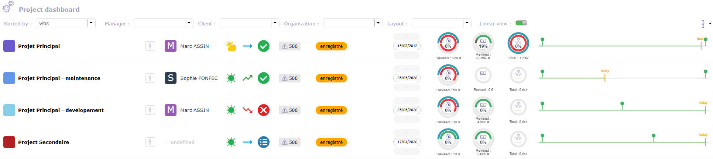
Mode linéaire¶
Détails du projet en mode graphique.¶
Cliquer sur le bloc image affiche l’écran des détails du projet.
Sur cet écran, un résumé des informations de votre projet est affiché graphiquement.

Détails du projet¶
Vous trouverez la description complète du projet, incluant ses dates de début et de fin (validées, planifiées et réelles).
Cliquez sur
 pour accéder à l’écran dédié au projet.
pour accéder à l’écran dédié au projet.Cliquez sur
 pour afficher le projet dans la vue de planification.
pour afficher le projet dans la vue de planification.Cliquez sur
 pour afficher le plan de charge dynamique.
pour afficher le plan de charge dynamique.
Plusieurs blocs permettent d’afficher les éléments du périmètre :
Objectifs du projet
La météo
Ressources allouées au projet
Une chronologie des jalons, affichant les jalons validés en dessous et les jalons planifiés au-dessus de la ligne.
La liste de tous les jalons du projet
Un bloc financier regroupant les informations de coûts et de dépenses du projet.
Gestion des revenus avec une liste de services commandés.
Risques, opportunités et graphique tornade
RACIs
Certains rapports, tels que la courbe à 45° ou le graphique burndown.
Vous choisissez les blocs que vous souhaitez afficher à l’aide des options de l’écran.
Vous pouvez glisser-déposer les sections et les colonnes.
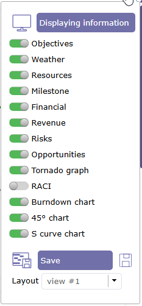
Options de détail du tableau de bord de projet¶